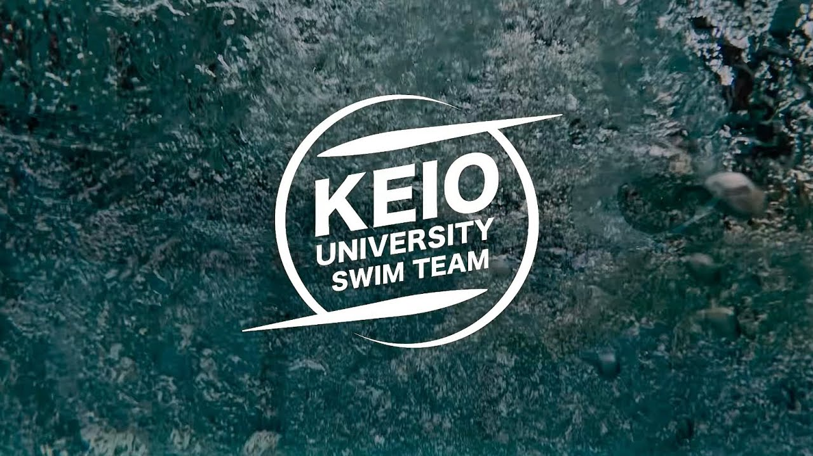

KEIO SWIM TEAM
日吉キャンパス内の恵まれた環境で、学生自らが思考し成長する。 圧倒的な熱量と貪欲さでインカレ勝利を目指す、慶應の大学水泳。
自ら思考し成長する環境と、体育会慶應の強い絆。 慶應水泳部で極限まで挑んだ経験は、卒業後も社会の最前線でたたかう一生の武器になります。

EXPLORE
水泳環境・活動内容
自ら思考するトレーニングで成長する環境
先輩たちのリアル
先輩たちは、なぜ慶應を選び、どうやって入ったのか。合格を掴み取ったリアルなストーリー。
両立・進路・費用
学業・就職との両立、費用や寮生活に関する疑問に答えます。
練習の見学・体験はもちろん、「遠方で今すぐ行けない」「まずはチャットで質問したい」というご相談も大歓迎です。 地方からお越しの方は、寮に宿泊しながら練習見学・体験をすることも可能です！